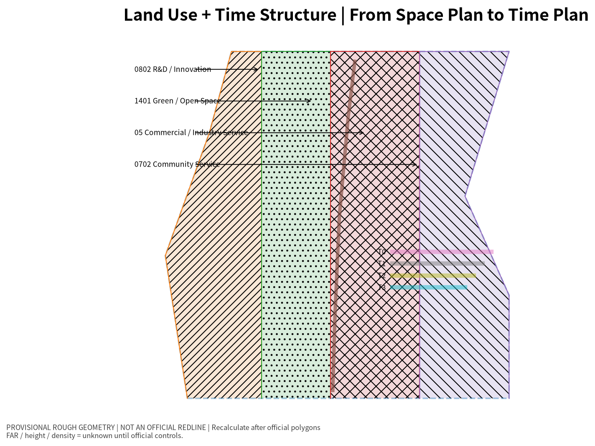
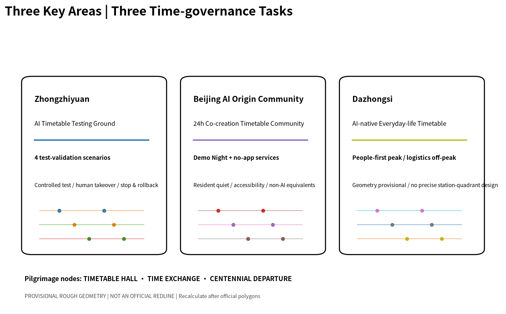
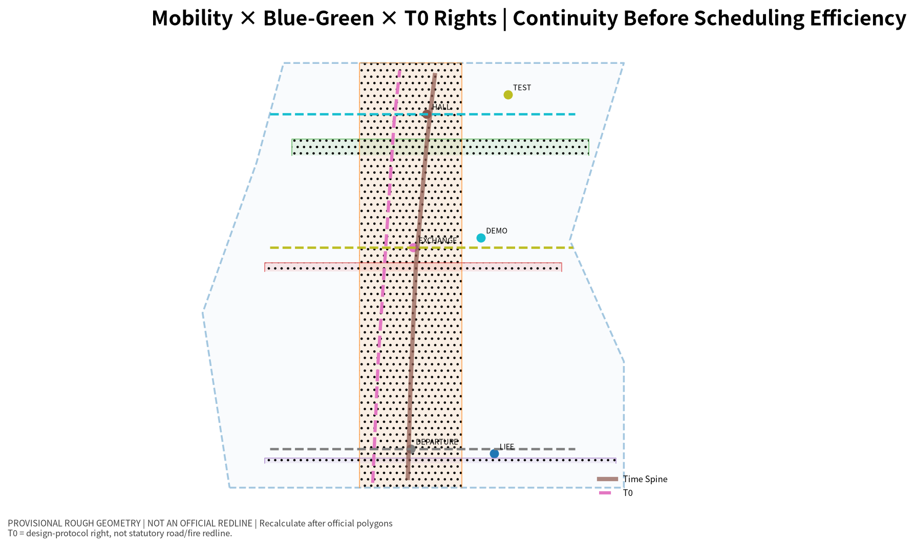

THE CITY TIMETABLE: An Auditable, Switchable AI Time-Space System for the Jing-Zhang Belt
Using the railway operating diagram as both cultural reference and operating mechanism, the proposal organizes the Jing-Zhang AI Innovation Belt as a public, auditable and human-overridable urban timetable. Robot delivery, low-speed autonomous shuttles, youth night activities, commuting, accessibility and emergency access share space through explicit time windows, while T0 constant rights override all algorithmic scheduling. Precise placement will be recalculated after official geometry is released.
THE CITY TIMETABLE · 京张运行图
A century ago, the Jing-Zhang Railway had to answer more than where tracks should go. It also had to decide when trains departed, where they met or yielded, which movement had priority, and how service recovered after disruption. An AI city faces a comparable coordination problem today, except that the actors now include people, robots, low-speed autonomous shuttles, public events and urban services.
The City Timetable treats time as a design dimension equal to space. A public place should communicate not only what it is, but what may happen there at a given time, who has priority, how conflicts are rejected or rescheduled, and who remains accountable for the final decision. AI may forecast conflict and recommend schedules, but it cannot override constant public rights or replace a named human owner.
This work is an open-call formal submission. It does not constitute government approval, statutory planning, engineering feasibility or autonomous-vehicle operating permission.
Design Basis and Source List
The official open-call announcement controls the project name, three scope levels, three key areas, required tasks and deliverable context 来源. The Agent-facing taskbook controls the co-creation principles, Agent 1–6 tasks, scenarios, personas, landmarks and long-term operation requirements 来源. Urban design, regulatory-plan boundary awareness and land-use classification follow the official local reference snapshots registered in the repository 标准 标准 标准.
Trusted official SITE_BOUNDARY and precise key-area polygons are still absent, as are approved FAR, height, density, setbacks, road redlines, ownership, utilities and heritage controls. Submitted site and key-area geometries therefore remain provisional_constraint with official_boundary=false, usable only for generation, visualization and temporary self-check 来源 [assumption:A-BOUNDARY-001].

Three-Level Scope Framework
The official task defines approximately 43.6 km² for coordinated research, 11.4 km² for overall design and 368.4 ha for the three key detailed-design areas 来源.
- 43.6 km²: coordinated innovation operating domain. Study the timing relationships among universities, enterprise testing, public services, logistics and international events rather than producing another generalized large-scale master plan.
- 11.4 km²: core City Timetable system. Establish three transferable spatial types: constant-rights space, time-shared space and controlled testing space.
- 368.4 ha: three time-governance experiments. Zhongzhiyuan tests safety and controlled experimentation; the AI Origin Community tests 24-hour co-creation balanced with everyday resident rights; Dazhongsi tests time-sharing among transit footfall, consumption, night activity and logistics 指标.
The same T0–T3 contract links all three scales: regional research studies activity rhythms, the overall design organizes shared public space, and the key areas turn the rules into inspectable scenarios.
Coordinated Research Area: Industry and Future City Research
Conventional spatial planning asks what belongs where. The City Timetable adds: what happens when, and who yields when uses conflict? The overall structure therefore includes one approximately 9.22 km concept time spine and three key-area time interfaces 空间数据 指标.
The first three international precedents test the machine-readability of public rules: NYC Open Streets for time-defined street modes and exceptions, LADOT Code the Curb for machine-readable public right-of-way, and Open Mobility Foundation CDS for interoperable regulation/event data 来源 来源 来源.
Three additional precedents test controlled experimentation and predictable public-rights periods: Singapore LTA/CETRAN for controlled AV testing, TfL School Streets for school-time access protection, and Paris Rues aux écoles for youth-friendly public-space transformation 来源 来源 来源.
The shared lesson is that an AI-native city is not defined by more sensors, but by rules that people can understand, machines can read, responsible humans can review, and systems can safely fall back from.
Overall Design Area: Urban Renewal and Regulatory-Plan-Level Urban Design
The proposal replaces the assumption that every space has one permanent operating mode with four time-space layers 空间数据:
- T0 Constant Rights: continuous accessibility, emergency access, essential walking and essential non-digital service. T0 is not reservable and cannot be overridden by AI.
- T1 Routine Rhythm: commuting peaks, school periods, everyday commerce, park movement and ordinary resident access.
- T2 Flexible Reservation: robot delivery, low-speed shuttle tests, community classes, temporary exhibition and youth activity.
- T3 Human-confirmed Event: AI conferences, special test weeks, Demo Night, large roadshows and high-crowd events. A named accountable human role is mandatory.
The TimeSlot Contract requires space unit, time window, allowed actors, priority, accessibility protection, human owner, stop triggers, rollback, logging, non-AI fallback and validation method. P0 life-safety/constant rights always outrank routine, reserved and event uses. The protocol includes both PASS and FAIL cases: an off-peak robot delivery that preserves T0 may proceed to human/operator review, while blocking the only accessible or emergency route must be rejected 指标.

Detailed Design of Key Areas
The three key areas do not receive identical “AI facilities”; each performs a different verifiable time-governance task 空间数据 深度.
Zhongzhiyuan: AI Timetable Testing Ground
Controlled testing, human takeover, public observation and operating-log interfaces support four industrial test-validation scenarios: robot delivery time-window stress testing, low-speed shuttle conflict/degradation testing, crowd-peak automatic exit, and human override/log replay 指标. Testing is never described as permission to operate. Accessibility conflict, unexpected crowding, communications/sensor degradation or a manual stop request triggers downgrade or termination [assumption:A-ROBOTICS-001].
Beijing AI Origin Community: 24-hour Co-creation Timetable Community
Daytime supports learning, collaboration and public service; approved evening windows support Demo Night, light sports and study-space switching. Resident quiet, ordinary access, accessibility and non-digital essential service remain hard constraints. Basic public service does not require a mandatory app, facial recognition or persistent individual tracking; AI navigation and cultural guidance retain physical wayfinding, printed information or staffed equivalents 指标.
Dazhongsi: AI-native Everyday-life Timetable District
Human flow receives priority during commercial/transit peaks; controlled replenishment and logistics move to lower-demand periods; youth culture and consumption occupy approved night windows; high-crowd states trigger machine exit. Because the absolute position of provisional PROV-KEY-003 still requires review against official data, this stage does not turn the rough rectangle into a precise station-quadrant or building-engineering proposal [assumption:A-DAZHONGSI-001].
The three pilgrimage nodes are TIMETABLE HALL, TIME EXCHANGE and CENTENNIAL DEPARTURE 空间数据.

AI Innovation Ecosystem, Personas, and AI+ Scenarios
The machine-readable scenario file contains six personas and twelve complete scenarios 空间数据 指标: robot-delivery stress test; low-speed shuttle degradation; crowd-peak machine exit; human override/log replay; reversible Youth Demo Night; no-app public-service navigation; AI cultural guide with non-digital equivalent route; night learning/light-sport switching; scenario booking/admission; shared enterprise demo slots; multi-party event-day scheduling; and public City Timetable display.
Personas cover AI startup teams/developers, university students/young researchers, nearby residents, accessibility/older users, merchants/night workers, and logistics/maintenance/emergency roles.
All twelve scenarios define human review and non-AI fallback. human_override_coverage and non_ai_fallback_coverage are therefore 100% at the design-contract field level; they are not claims about future measured operating performance 指标 指标 [assumption:A-METRICS-001].
Land Use, Building Scale, and Retain-Renovate-Demolish Strategy
geometry/land_use.geojson uses verifiable land_use_code values to express a conceptual functional structure and explicitly states that it is not regulatory approval 空间数据 标准. FAR, approved height, building density and setbacks remain unknown 指标.
The building layer contains six candidate_retrofit illustrative units that express a preference for adaptive reuse, reversible ground floors and public interfaces. They do not correspond to surveyed existing buildings. Their concept footprint totals approximately 88,628.915 m² 指标. No demolition quantity, new-build quantity or confirmed construction scale is inferred [assumption:A-CONTROLS-001].
Transport, Rail, Municipal Infrastructure, and Public Services
The road layer uses the valid ROAD_CENTERLINE enum for the concept time spine and three time interfaces; these are not existing-road centerlines or engineering alignments 空间数据. T0 constraints use the REGULATORY_CONTROL enum as a machine-readable layer while each feature remains geometry_role=design_proposal and official_boundary=false; they are not statutory road or fire-control redlines 空间数据.
The T0 concept network totals approximately 12.33 km and represents the rule that accessibility, emergency access and essential walking remain continuous across every schedule mode 指标.
Municipal/new-infrastructure strategy treats public operating state, machine-readable rules, human takeover, exception logs and non-digital backup as digital infrastructure. Energy, edge compute, sensors, communications, utilities and fire-safety capacities remain subject to future professional data and engineering review [assumption:A-CONTROLS-001].

Blue-Green Network, Public Space, and Urban Character
The visual identity does not treat “futuristic blue light” as the sole language of AI. The time axis, station, meet/yield line and delay-recovery logic of railway operating diagrams are translated into signage, paving, public information and event systems 标准.
The concept green layer contains one heritage-park timetable green corridor and flexible open-green areas in the three key zones. Relative to the provisional site and recalculated in EPSG:4548, the current green_ratio=31.5058%. This is a concept-layer ratio, not an approved green-ratio control and not an official heritage-park boundary 指标.
Six reversible public spaces include the three pilgrimage nodes plus test, youth and AI-everyday-life spaces. Their concept area is approximately 1.4959% of the provisional overall design area 指标 指标. The objective is not the percentage itself, but demonstrating multiple time modes without sacrificing T0 rights.
The cultural narrative follows Centennial Departure — Open Meeting/Yielding — Intelligent Operation — Recoverable City: railway history explains how shared time coordinated complex movement; Zhongguancun culture contributes open innovation and technology transfer; AI culture contributes transparent rules, accountability and human-machine collaboration.
Renewal Projects, Implementation Policy, and Phasing
Implementation sequencing is cross-checked against the phasing layer and scenario inventory 空间数据 指标.
- Near term: TimeSlot Contract, public timetable interface, T0 accessibility/emergency checks, no-app navigation, reversible Demo Night and controlled robot testing that does not enter ordinary public roads.
- Mid term: after official polygons and professional conditions are added, coordinate event, logistics, public-service, walking and testing windows across the three key areas.
- Long term: only after transport, safety, planning, utilities, heritage, ownership and operating-approval pathways are clear should higher-level embodied-AI public operation or substantial spatial reconstruction be considered [assumption:A-ROBOTICS-001].
The annual operating system includes Open Timetable Week, Urban Agent Scheduling Challenge, Robotics Low-speed Test Week, Jing-Zhang Demo Night and Annual City Timetable Review. These are recurring governance/testing cycles rather than stand-alone promotional events.
Metrics, Area Recalculation, and Compliance Matrix
Structured metrics and spatial recomputation remain authoritative for quantitative claims 指标 空间数据.
| Metric | Current value | Limitation |
|---|---|---|
site_area_sqm | 11,412,825.386 m² | provisional boundary, not official redline |
key_area_count | 3 | count follows the task; geometries remain provisional |
building_footprint_area_sqm | 88,628.915 m² | six concept retrofit units |
green_ratio | 31.5058% | concept green layer; not approved green ratio |
public_space_ratio | 1.4959% | six timetable public spaces only |
time_spine_length_m | 9,216.69 m | concept time spine; not engineering alignment |
t0_constant_rights_corridor_length_m | 12,327.509 m | design-protocol rights lines; not statutory redlines |
scenario_count | 12 | machine-readable scenario cards |
test_validation_scenario_count | 4 | industrial test-validation scenarios |
human_override_coverage | 100% | design-field coverage |
non_ai_fallback_coverage | 100% | design-field coverage |
floor_area_ratio | unknown | awaiting official controls and official polygon |
Traceability among official requirements, Agent 1–6, professional standards, design depth, layers, metrics and risk assumptions is maintained in compliance_matrix.json, standard_matrix.json and design_depth_matrix.json 深度.

Risk, Copyright, and Compliance
Risk and pending-data statements are controlled by assumptions, source registration and professional standards 来源 标准.
1. Boundary: official polygons are missing; all provisional-derived results require full-system recalculation when trusted polygons arrive [assumption:A-BOUNDARY-001]. 2. Regulatory/engineering: FAR, height, density, setbacks, roads, utilities, heritage and ownership are not inferred [assumption:A-CONTROLS-001]. 3. Embodied AI: testing is not permission; public deployment requires separate safety, transport, regulatory and operating conditions [assumption:A-ROBOTICS-001]. 4. Dazhongsi: precise station quadrants and building placement are deferred until provisional geometry is resolved [assumption:A-DAZHONGSI-001]. 5. Metrics: design-contract coverage remains distinct from measured incidents, conflict-rejection rates and public satisfaction [assumption:A-METRICS-001]. 6. Privacy/equity: basic public service does not require facial recognition, persistent individual tracking, mandatory apps or a single vendor. 7. Copyright: core figures and drawings are programmatically generated from this proposal's structured data; no peer submissions, corporate logos or uncleared images are copied. See report/copyright_statement.md. 8. Status: this work is described only as an open-call formal submission until repository merge, professional review or later implementation establishes another status.
References
- Official Centennial Jing-Zhang AI Innovation Belt open-call announcement 来源
- Agent-facing open-call taskbook 来源
- Repository public source registry 来源
- Local official references for urban design, regulatory planning and land-use classification 标准 标准 标准
- NYC DOT Open Streets / LADOT Code the Curb / OMF CDS / Singapore LTA AV / TfL School Streets / Paris Rues aux écoles are used only as mechanism precedents and are registered in
sources.json来源